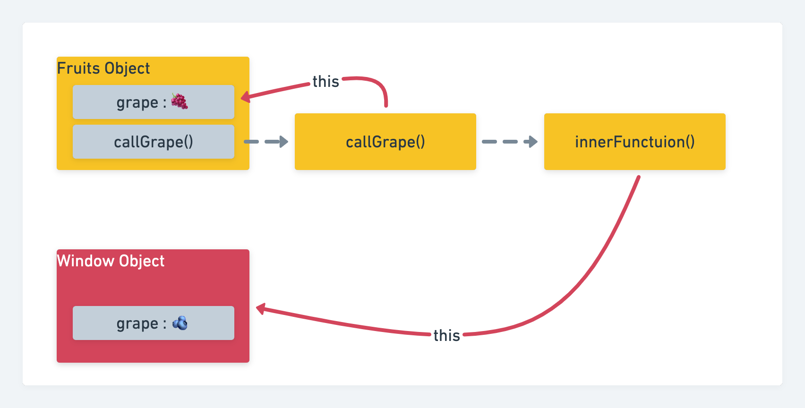

함수
자바스크립트의 함수는 객체로 취급 받는다. (일급객체)
따라서 객체처럼 리터럴 방식으로 선언할 수 있고, new 연산자로 선언할 수도 있다. (대부분.. 리터럴 방식을 선호한다.)
//new 연산자 선언
var sum = new Function('a', 'b', 'return a+b');
sum(1, 3); //4
익명함수와 선언함수
익명 함수는 말 그대로 ‘이름을 갖지 않는’ 함수이다.
보통 변수에 저장해서 선언 후 호출한다.
add(2, 3); //result : type error
var add = function (x, y) {
//익명함수
return x + y;
};
add(3, 7); //result : 10
선언 함수는 함수 선언 시 이름을 지명한다.
자바스크립트에서는 함수 선언을 변수를 지정하기 전 메모리에 미리 저장시키기 때문에 익명 함수 특성상 코드 상단에서도 실행시킬 수 있다.
(이를 호이스팅이라 지칭하는데 단순히 코드 상단으로 옮겨지는 과정이라 생각하면 안되고, 실행 컨텍스트 입장에서 생각하여야 한다.)
따라서 익명 함수는 변수에 저장 하기 때문에 미리 선언할 수 없고, 익명 함수는 선언하기 전에 실행문이 위치해도 문제가 없다.
add(2, 3); //result : 5
function add(x, y) {
//선언함수
return x + y;
}
add(3, 7); //result : 10
리턴 값
자바스크립트 함수는 return을 생략이 가능하다.
return 문을 생략하는 함수는 반환물을 undefined로 반환한다.
제어를 끝내려는 (단순 반환 지점으로 되돌림) 용도로 쓰이는 경우 undefined → boolean 값으로 false에 해당하므로 명확하게 표기하는 것은 return false로 표현하는 것이 낫다.
함수는 객체로 취급받기 때문에 함수 반환 시 함수로도 반환해줄 수 있다는 것을 기억하자!
function notReturn() {
console.log('😝 돌려줄게 없다');
}
if (notReturn()) {
//return 생략 시 undefined로 반환
console.log('true');
} else {
console.log('false');
}
//result : false
매개변수
자바스크립트의 함수에도 역시나 유연한 성질을 갖고 있다.
선언한 매개변수보다 많거나 더 작은 매개변수를 허용한다.
function displayFruit(fruits, price) {
var price = price || 0;
return fruits + price + '원';
}
displayFruit('🍒'); //"🍒0원"
displayFruit('🍒', 2000); //"🍒2000원"
내부함수
함수 내부에 또 함수를 작성하는 패턴, 주로 여러 함수를 사용시 충돌 위험을 최소화하려고 사용한다.
만약 외부함수와 내부함수의 이름이 갖다면 내부 함수부터 우선적으로 실행한다.
(내부함수는 외부에서 접근할 수 없다, 자바스크립트는 함수 단위로 블록 스코프를 형성하기 때문이다.)
function pythagoras(wid, hei) {
function square(x) {
//내부함수 생성
return x * x;
}
return Math.sqrt(square(wid) + square(hei)); //내부함수 호출 후 return 값 반환
}
pythagoras(2, 3);
즉시실행함수 (IIFE)
함수를 정의함과 바로 동시에 실행되는 함수이다.
최초 한 번의 실행만을 필요로 하는 함수에 사용할 수 있다.
(function (name) {
console.log(name); //test
})('test');
유명한 프레임워크인 jQuery에서도 즉시실행함수가 사용되었다.
(function(window, undefined){
..code
})(window);
즉시실행함수도 함수이므로 변수에 저장이 가능하다.
(mySquare = function (x) {
console.log(x*x);
})(2);
mySquare(3);
//result : 즉시실행함수 'mySquare'가 즉시 호출(2*2 = 4)되고, 곧이어 매개변수 '3'을 넘겨 재호출된다, 즉 재호출 가능하다.
var mySquare = function (x) {
console.log(x*x);
})(2);
mySquare(3);
console.log(mySquare(2));
//result : 특정 스코프 변수에 즉시실행함수를 담아두어 호출할 때만 사용할 수 있다.
this
일반적으로 객체 내부에 정의된 함수를 메서드라고 지칭하는데, 함수에서 this키워드를 사용하면 해당 객체에 접근할 수 있다.
반면 객체 내 함수의 내부 함수에서 this 키워드 호출 시 최상위 객체로 접근한다.
만약 웹브라우저에서 특정 객체의 메서드가아닌 일반 함수를 호출한다면, 브라우저 최상위 객체인 window에 접근하는 것이다.
apple = '🍎'; //자바스크립트에선 변수 생략 시 window 객체에 저장한다.
function callApple() {
return this.apple; //최상위 객체인 window.apple 호출
}
callApple(); //'🍎'
반면 특정 객체내의 메서드 호출 시 해당 객체의 요소에 접근한다.
grape = '🫐';
var fruits = {
grape: '🍇',
callGrape: function () {
function innerFunction() {
console.log(this.grape); //'🫐';
}
innerFunction();
return this.grape;
}
};
fruits.callGrape(); //'🍇'
위 예제를 그림으로 표현하면 아래와 같다. 
함수를 호출하는 방법
지금까지 예제에선 ( )를 통해 함수를 호출했지만 call, apply메서드를 통해 함수를 호출할 수 있다.
call, apply 메서드를 사용하는 이유는 this 바인딩을 명시적으로 지정해줄 수 있기 때문이다.
call()
call 메서드를 이용하여 함수를 호출시키고, this바인딩을 변경할 수 있다.
value = '🍏'; //window객체
var nameObj = { value: '🍌' };
var gender = { value: '🍓' };
function getInfo() {
return this.value;
}
getInfo(); //일반 호출시 window.value(전역객체 value 출력) -> '🍏'
getInfo.call(); //마찬가지로 window.value -> '🍏'
getInfo.call(nameObj); // nameObj.value -> '🍌'
getInfo.call(gender); //nameObj.value -> '🍓'
apply()
call() 메서드와 역할은 동일하나 리스트 형태로 프로퍼티들을 전달할 수 있다.
function Person(name, age, gender) {
//생성자 함수
this.name = name;
this.age = age;
this.gender = gender;
}
var bindObj = {}; //빈 객체 생성(bind 할 오브젝트)
Person.apply(bindObj, ['name', 25, 'man']); //Person 함수를 호출하고, this는 bindObj 객체에 바인딩, 해당 프로퍼티를 Person에 전달
console.dir(bindObj); //{name: "name", age: 25, gender: "man"};
프로토타입
프로토타입을 통해 객체가 가진 속성들에게 메서드를 공유할 수 있다.
모든 함수는 객체이기 때문에, prototype 속성을 가지고 있는데 생성자 함수로 생성한 객체들도 그역시 프로토타입 객체를 참조한다.
즉, 모든 자바스크립트 객체는 Object.prototype객체가 가진 프로퍼티와 메서드들을 서로 공유한다.
(모든 객체들은 proto라는 부모 역할의 상위 프로토타입을 지니며, 최상위 프로토타입은 Object.prototype이다.)
//String 객체에 introduce 라는 메서드 정의, 모든 String 객체들은 이 메서드를 공유한다.
String.prototype.introduce = function () {
return 'My Name is ' + this;
};
var name = 'choi';
name.introduce(); //"My Name is choi"
'kim'.introduce(); //"My Name is kim"
참고자료
- 자바스크립트 닌자 비급 - 함수를 자유자재로 휘두르기 (John Resig)
- 인사이드 자바스크립트 - 함수와 프로토타입 체이닝 (송형주, 고현준 저)